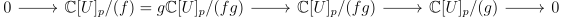

Recall Bezout’s theorem from last time: if we have two curves in \(\PP ^2\) given by homogeneous equations \(F,G\) of degree \(n,m\) respectively, and the curves intersect at finitely many points, then the number of intersection points, counted with multiplicity is \(nm\). This fact is the beginning of intersection theory, and critically uses the interpretation of \(F,G\) as divisors on \(\PP ^2\). Our varieties here will be projective. Here to simplify the discussion, we will pass between a curve, and its associated compact Riemann surface (i.e \(1\)-dimensional complex compact Riemann surface.
Our main tool we will use to work with Riemann surfaces is the following theorem from complex analysis that essentially follows from the fact that holomorphic functions are analytic.
Theorem 1.1. If \(f\) is a nonconstant holomorphic function \(\CC \to \CC \) sending \(0\) to \(0\), there is a biholomorphic reparameterization of neighborhood of the origin such that \(f \circ g\) is the map \(z \mapsto z^k\) for some \(k\).
The way this Riemann surface is produced as in the theorem below:
Theorem 1.2. Given a projective curve \(C \subset \CC \PP ^n\), there is a Riemann surface \(C'\) with a proper holomorphic map \(C' \to C\).
Proof. Take a generic hyperplane inside \(\CC \PP ^n\), and take the projection of the curve onto that hyperplane. Doing this finitely many times produces a finite covering map \(f:\CC \to \PP ^1\) that is branched at finitely many points.
Now we will examine what happens at a singular point \(p\) of the curve. in a small deleted open disk near of the point \(f(p)\), the map \(f\) is a genuine covering map. We can examine the connected component of this cover that contains \(p\). A punctured disk has fundamental group \(\ZZ \), so we know that all covers where the fibres are finite are after a change of coordinates \(z \mapsto z^n\). In particular, \(f\) locally in a punctured neighborhood of \(p\) looks like some \(g:z \mapsto z^n\) on the punctured unit disk. By the Riemann extension theorem, we can extend \(g\) to the whole unit disk. Since this is an isomorphic covering of the punctured unit disk and locally biholomorphic away from \(p\), we can add a holomorphic chart to the Riemann surface for \(C\) via this unit disk. (the isomorphism of covering spaces extends by Riemann extension, and is proper). Thus we can remove all singularities and produce a \(C' \to C\). □
\(C'\) is just like \(C\) in that the map \(C' \to C\) is biholomorphic except at the finitely many singular points. We can call \(C'\) the resolution of \(C\). Here is an example of what is happening: consider the curve \(x^2z = y^3\) inside \(\PP ^2\). The point \([0:0:1]\) is a singular point. We can make a map from \(\PP ^1\) to this singular curve given by \([v:w] \mapsto [v^3:v^2w:w^3]\). This is the resolution as it is a holomorphic map away from the singular point and \(\PP ^1\) is smooth.
Exercise 1.2.1. Find the resolution of the curve \(y^2z = x^3+x^2z\) (Hint, the nonsingular curve is \(\PP ^1\)).
We can go the other way and produce a projective curve from a compact Riemann surface, however this result will be taken for granted here.
Definition 1.3. A (Weil) divisor on an irreducible variety \(V\) is a linear combination of irreducible codimension \(1\) subvarieties of \(V\).
For example, on a curve or Riemann surface, this is a linear combination of points, and on \(\PP ^2\), this is a linear combination of irreducible curves. If we interpret a codimension \(1\) subvariety as a divisor, we call it a prime divisor.
Divisors naturally arise from functions. It is possible to do this in general, but I will stick to doing this for \(\PP ^n\) and for curves, but it is not much harder to do it for any variety. For \(\PP ^n\), suppose we have an irreducible codimension \(1\) subvariety. I claim that it corresponds to an irreducible homogeneous polynomial in \(\CC [x_0,\dots ,x_n]\). To see this, certainly there is some nontrivial homogeneous polynomial \(F\) that vanishes on. Now since the ring is a UFD (as a graded ring), \(F\) factors into homogeneous irreducibles, and by irreducibility, one of those irreducibles \(F'\) also vanishes on the subvariety. Now the homogeneous ideal of polynomials vanishing on the subvariety must be \(F'\) as both the subvariety and \(F' = 0\) are irreducible proper subvarieties of codimension \(\leq 1\). Now given a nonconstant homogeneous function \(F\), we define \(\di (F)\) to be the divisor where the coefficient of a subvariety defined by \(G\) is the power of \(G\) in the factorization of \(F\). Then for a nonconstant rational function \(F/G\) on \(\PP ^n\), we define \(\di (F/G) = \di (F)-\di (G)\).
On a curve, a divisor has another equivalent description. Now a codimension \(1\) subvariety is dimension \(0\) so is a point. Thus a divisor is a linear combination of points. To find \(\di (f)\) at a point \(p\), we first take an affine neighborhood \(U\) containing \(p\), and adjoin inverses in \(\CC [U]\) to every element that doesn’t vanish at \(p\). Call the resulting ring \(\CC [U]_p\), or the local ring at \(p\). Then let \(f=g/h\), where \(g,h\) are functions that are defined at \(p\). If \(p\) is smooth, then \(\dim _\CC (\CC [U]_p/(g))-\dim _\CC (\CC [U]_p/(h))\) is the multiplicity of the divisor at \(f\). To see that this is well-defined, it suffices to note that \(\dim _\CC (\CC [U]_p/(g))+\dim _\CC (\CC [U]_p/(f)) = \dim _\CC (\CC [U]_p/(fg))\), as we have the exact sequence:

Thus if \(\frac f g = \frac a b\), then \(\di (\frac f g)-\di (\frac a b) = \dim _\CC (\CC [U]_p/(fa))- \dim _\CC (\CC [U]_p/(gb)) = 0\). For non-smooth points, one should replace \(\dim _\CC \) with the length as a \(\CC [U]_p\) module. For smooth points, an equivalent description is the valuation of \(f\) for the natural valuation on \(\CC [U]_p\).
For a Riemann surface, the divisor of a function is the sum over all the zeroes of the multiplicity of the zeroes minus the sum over all the poles of the multiplicities of the poles.
The notions are compatible in the following way: suppose I have a curve \(C\) in \(\PP ^n\), and a rational function \(f\) on it that restricts to a rational function on \(C\). Then if \(|\) is the restriction, \(\di (f)|_C = \di (f|_C)\). Similarly divisors on curves are compatible with associated divisors on the associated Riemann surfaces.
We say that a divisor is a principal divisor \(D\) if there is a rational function \(f\) such that \(\di (f) = D\). We say that \(D~D'\), or \(D\) and \(D'\) are linearly equivalent if their difference is a principle divisor. The principal divisors on a variety \(V\) form a subgroup of the group of all divisors on \(V\). The quotient is called the (divisor) class group \(\Cl (V)\) of \(V\).
Exercise 1.3.1. An affine curve \(C\) is called regular if \(\CC [C]\) is an Dedekind domain. Show that the class group of a regular affine curve \(C\) is the ideal class group of \(\CC [C]\).
What is the class group of \(\PP ^n\)? Given a divisor, we can get a quotient of homogeneous polynomials by interpreting \(\Sigma n_iF_i\), where \(F_i\) is a homogeneous polynomial viewed as a divisor, as \(\prod F_i^{n_i}\). We can make a homomorphism \(\deg : \Cl (\PP ^n) \to \ZZ \) by sending a divisor to the degree of its numerator minus the degree of its denominator as a homogeneous polynomial. The kernel is exactly the rational functions, and the map is clearly surjective, so \(\Cl (\PP ^n) = \ZZ \).
A divisor is effective if it is a non-negative linear combination of codimension \(1\) subvarieties. For example, \(\di (F)\) is effective on \(\PP ^n\) for \(F\) homogeneous.
We will study the way in which divisors work on curves. For \(\PP ^1\), we have already seen that \(\Cl (\PP ^1) = \ZZ \). Note in particular that a divisor is principle iff its degree is \(0\).
For any smooth curve \(C\), we can also define the degree of a divisor as just \(\deg : \sum n_i c_{p_i} p_i \mapsto \sum n_i\), where \(c_{p_i}\) is the multiplicity of the point \(p_i\). I will define the multiplicity in two special cases: for a smooth point, the multiplicity is \(1\), and for a point on a (possibly singular) curve inside \(\PP ^2\), to define it, we first translate our curve to have the singular point at \(0,0\) of an affine chart, then the curve is given by \(f(x,y) = f_m+f_{m+1}+\dots +f_{n}\) where \(f_i\) is nonzero, homogeneous of degree \(i\).
For example the curve \(y^2 = x^3\) has a singular multiplicity \(2\) point at the origin.
Then \(m\) is the multiplicity of the point \(p\). In general it is not true that a divisor of degree \(0\) is principle, however, the converse still holds. To do this, we will think about Riemann surfaces. For a Riemann surface, meromorphic functions (which are the same as rational functions on the associated variety), are exactly holomorphic maps to \(\PP ^1\). This is analogous to the following statement:
Theorem 2.1. A rational function is the same as a rational map to \(\PP ^1\). A rational map to \(\PP ^1\) for a smooth curve is regular.
Proof. If \(f\) is a rational function on \(V\), then \([f:1]\) defines a rational map to \(\PP ^1\). To see this is a morphism, write \(f = G/H\), so that \([f:1] = [G:H]\), \(G,H\) coprime. For a smooth point on a curve, we can always force this map to be regular, as the local ring at each point is a DVR, so by multiplying by a uniformizer, we can guarantee that \([f:1] = [a:b]\) where at most one of \(a,b\) vanishes, and the other is defined at \(p\). Conversely, given a morphism to \(\PP ^1\) given as \([f,g]\), \(f/g\) is the corresponding rational function. □
Then, given a nonconstant holomorphic map \(g:C \to C'\) between Riemann surfaces, we can pullback a divisor from \(C'\) to \(C\) as follows: at every point \(p\), the map locally looks like \(z \mapsto z^k\). Then we say that the pullback of a point \(y\) of \(C'\) is the sum over all points in \(f^{-1}(y)\) of this number \(k\). We extend linearly to all divisors, and write the pullback of \(D\) as \(g^*(D)\). Note that the number \(k\) can be computed in an algebraic way: if \(f\) is a function with a zero of order \(1\) at \(p\), then \(g^*(y)\) is a function with a zero of order \(k\) at a point in \(f^{-1}(y)\). The local ring at \(p\) interpreted in terms of Riemann surfaces is exactly just the meromorphic functions that don’t send \(p\) to \(\infty \). The order of a zero of pole is exactly then just the valuation on this ring. Thus the pullback of the divisor of a rational function is the same as pulling back the rational function, and then taking its divisor.
The degree of a the pullback of a prime divisor on a nonconstant map of Riemann surfaces is independent of the point. To see this, we can note that the number of preimages is locally constant except at finitely many points, which are called ramified. This follow from the fact that nonconstant maps look like \(z\mapsto z^n\), which locally has the same number of preimages. Moreover,if we have any sequence of points \(p_n\) with the degree of the pullback constant, then the degree of the pullback of the limit had also better be constant. To do this, we can use compactness to match up fibres of \(p_n\) with fibres of the limit, and then use the fact that at the fibres of the limit it looks like \(z \mapsto z^n\). This immediately also implies that ramified points are isolated, so that there can only be finitely many by compactness. There are finitely many preimages of each point also by compactness.
An immediate consequence of this is the following:
Theorem 2.2. \(\deg \di (f) = 0\) on a nonsingular curve \(C\).
Proof. It suffices to observe that if we interpret \(f\) as a meromorphic function \(C \to \PP ^1\), then \(\deg \di (f) = \deg f^*(0 - \infty ) = \deg f^*(0)-\deg f^*(\infty ) = 0\), since the degree of the pullback of a point is independent of the point. □
In fact the same theorem is true for singular curves, although one cannot prove this without a bit of commutative algebra, as singular curves are not analytic objects as of yet.
Now we can prove Bezout’s theorem. It was previously stated in terms of curves in \(\PP ^2\), but it can be stated in terms of divisors \(D_1,D_2\). Suppose \(D_1,D_2\) have no common curves, so that the intersection of all the curves in them is finite. Then we can define the intersection number \(D_1\cdot D_2\) by linearly extending the definition of the intersection number of two effective divisors. This can be described for effective divisors as follows: say that at an intersection point of the divisors (i.e a place that is an intersection point of two curves in the divisor), \(D_1 = \sum n_i C_i\) and \(D_2 = \sum m_i C_i'\). Let \(C_i,C_i'\) on an affine chart be given by functions \(f_i,g_i\). Then the sum over all the intersection points of the multiplicity of the intersection, which locally is given by \(\dim _\CC (\CC [x,y]/(\prod f_i^{n_i},\prod d_i^{m_i}))\). As we saw earlier, this is a bilinear map from divisors to the integers.
Theorem 2.3. \(D_1\cdot D_2 = \deg (D_1)\deg (D_2)\).
Proof. We first show that the intersection number only depends on the divisor class. It suffices by linearity to prove that \(\di (f)\cdot C\) is \(0\) for a prime divisor \(C\) and a rational function \(f\). However this is true because \(\di (f)\cdot C = \deg i^*(\di (f))\) by definition where \(i\) is the inclusion map \(C \to \PP ^2\). Then by the previous theorem (for singular curves), this intersection number is indeed \(0\).
Finally we observe that two lines intersect at \(1\) point, so that by bilinearity, we are done. □
Intersection theory is about trying to do the same thing in a more general setting, namely for any projective variety what can we say about the way in which some subvarieties intersect? For example, given a divisor and a curve not contained in the components of the divisor, we can similarly define the intersection number of the curve with the divisor. The same proof as above shows that this only depends on the divisor class.
Another remark is that we can also intersect things that have common components. To do this, one proves that given any divisor \(D\) and finitely many points \(p_1,\dots p_n\), there is a linearly equivalent divisor that doesn’t contain those points. Thus it makes sense to talk about intersections of divisors that overlap by first finding linearly equivalent divisors that don’t overlap, and then intersecting them. Thus it is possible to talk about the self intersection of a curve on a surface for example. In \(\PP ^2\), the self intersection is always a square, but there are surfaces that have curves in them with negative self intersection.